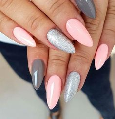

Gelnagels
Voor sterke, verzorgde nagels met een afwerking die bij je stijl past.
Nagelstudio
Bij beauty by ANS kan je terecht voor gelnagels, gellak, french manicure en handverzorging met aandacht voor detail.

Diensten
Voor sterke, verzorgde nagels met een afwerking die bij je stijl past.
Een glanzende, natuurlijke look zonder dat het zwaar aanvoelt.
Extra aandacht voor handen, nagelriemen en gezonde nagels.
Waarom deze preview
De huidige Webnode-site bevat de basisinfo, maar voelt nog wat standaard. Deze preview zet beauty by ANS warmer en professioneler neer, met sneller zicht op diensten, afspraak en contact.
Contact
Neem contact op om een afspraak te maken of de prijslijst te bespreken.